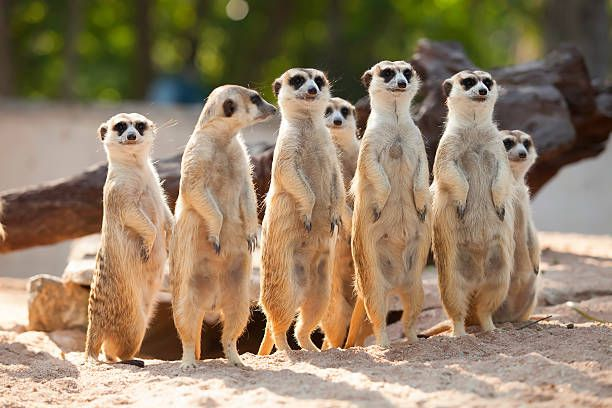

Animais massas e bem legais tambem
 Cavalo
Cavalo
Cavalos são mamíferos fortes e velozes, usados para transporte, trabalho e esporte. Inteligentes e elegantes, vivem em manadas e possuem grande sensibilidade e resistência natural.
 Sapão_grandão
Sapão_grandão
O sapo é um anfíbio de pele úmida e rugosa, que habita áreas úmidas, salta com agilidade, possui ciclo de vida complexo e controla insetos.

Suricato
O suricato é um mamífero social que vive em bandos, vigia predadores em pé, escava tocas no deserto e demonstra grande cooperação entre seus membros.